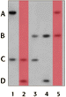
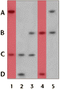

DNA Forensics Problem Set 1
Problem 3: Father's Profile
Results from a single locus probe DNA fingerprint analysis for a man and his four different children are shown in the figure. Which lane contains the DNA of the father?
Tutorial
Predicting the outcome| As mentioned in the problem 2 tutorial, each parent contributes one set of alleles to each child. The autoradiograph above contains DNA from four children and one father. Each child will share one band (allele) with the father. You can use the process of elimination to determine which lane contains the father's DNA. |
Process of elimination
| The 4 alleles that appear in this autoradiograph have been labeled A, B, C and D. Look at the bands in lanes 2 and 5. Lane 2 contains the alleles C and D, whereas lane 5 contains alleles A and B. Because these lanes have no bands in common, neither lane can contain the DNA of the father. Remember that each child will share one band with the father and one with the mother, whose DNA is not on this autoradiograph. |  |
|
Look at the bands in lanes 1 and 4. Again, there are no matching alleles so these lanes do not contain the father's DNA. Keep in mind that siblings do not necessarily inherit the same alleles from their parents, and will usually have different DNA profiles from one another.
Having ruled out 4 of the 5 lanes, the father's lane is easy to identify. Check your work by matching the lane of the father with each lane for the four children. Again, one band from the father should match at least one band for each child. |
 |


The Biology Project
University of Arizona
Revised: September 2000
Contact the Development Team
http://www.biology.arizona.edu
All contents copyright © 1996-2000. All rights reserved.